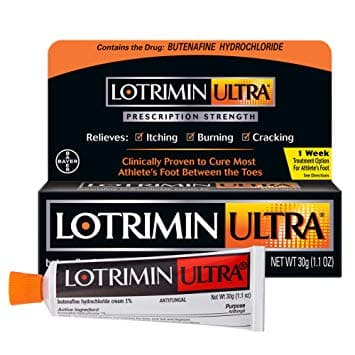

Если у вас или вашего ребенка появляется зуд кожи стоп, то, скорее всего, из-за микоза. Не переживайте, вы не сделали ничего плохого — это обычное житейское дело. Если у вашего ребенка ноги всегда в тепле и влажные (т.е. он постоянно носит носки, например), у него есть все шансы однажды получить микоз стоп. Микоз — покраснение, шелушение, трещины на коже стоп и между пальцами ног, и все это чешется и горит. Если расчесов много — сыпь мокнет. Обувь и ноги могут издавать неприятный запах. Часто встречается у подростков и взрослых. Фактически микоз — врачи говорят «дерматомикоз стоп» — наблюдается примерно у 75% людей. Микоз вызывает грибок, живущий на влажной теплой коже. Основную проблему это представляет летом и у людей, которые сильно потеют. Вопреки распространенному мнению, микоз НЕ очень заразен. Ребенок может продолжать заниматься плаванием и спортом. Достаточно обычной стирки, да и в душе не нужны предосторожности. При лечении микоз проходит за несколько недель. Однако он очень часто рецидивирует, так что следуйте нашим советам по профилактике, приведенным ниже.
ЧТО ДЕЛАТЬ
Пользуйтесь антигрибковым кремом. Большинство безрецептурных кремов, например Тинактин, Лотримин, Микатин, довольно эффективны. Наносите крем на сыпь и между пальцами ног два раза в день на протяжении 1—2 недель (и как минимум еще 7 дней после исчезновения сыпи).

Облегчите зуд. Это самый раздражающий симптом микоза, особенно ночью! Нанесение крема, содержащего 1% гидрокортизона, поможет уменьшить зуд. Не стоит использовать его слишком часто — он никак не действует на сыпь, только облегчает зуд. Учтите, что расчесы ухудшают процесс заживления.
Держите ноги сухими. Поскольку грибок любит теплую и влажную кожу, важно, чтобы ноги оставались сухими. Прежде чем нанести противогрибковый крем, ополосните ноги в воде или в слабом растворе уксуса и хорошенько их вытрите. Чтобы ноги меньше потели, пользуйтесь хлопчатобумажными носками, чаще меняйте их, носите сандалии или шлепки, когда только можно. Туфли из ткани хорошо пропускают воздух, но избегайте обуви, плотно прилегающей к коже.
ПРОФИЛАКТИКА
Просто следите, чтобы ноги были сухими — этого достаточно, чтобы предотвратить рецидивы. Полезны еженедельные десятиминутные ножные ванночки с раствором уксуса (пополам вода и столовый уксус). Тщательно вытирайте ноги после ванночек, особенно между пальцами ног.
КОГДА ВОЛНОВАТЬСЯ
СОВЕТ ДОКТОРОВ СИРС: ЛЕЧЕНИЕ МИКОЗА НАТУРАЛЬНЫМИ СРЕДСТВАМИ Родители, которые предпочитают натуральные средства, могут попробовать крем, присыпку или масло чайного дерева. Это натуральное масло имеет противогрибковые свойства и может служить альтернативным лечением при многих грибковых поражениях кожи. Противогрибковым действием обладает также отечественный растительный препарат сангвиритрин. |
ЧТО МОЖЕТ СДЕЛАТЬ ВРАЧ
При микозе, с которым не справились вышеперечисленные домашние средства, врач, скорее всего, назначит более сильные противогрибковые препараты; возможно, крем с кортизоном при сильном зуде. Хотя этот крем безопасен, его применение должно контролироваться врачом.
Здоровье ребенка от докторов Сирс / Сирс У. и др.